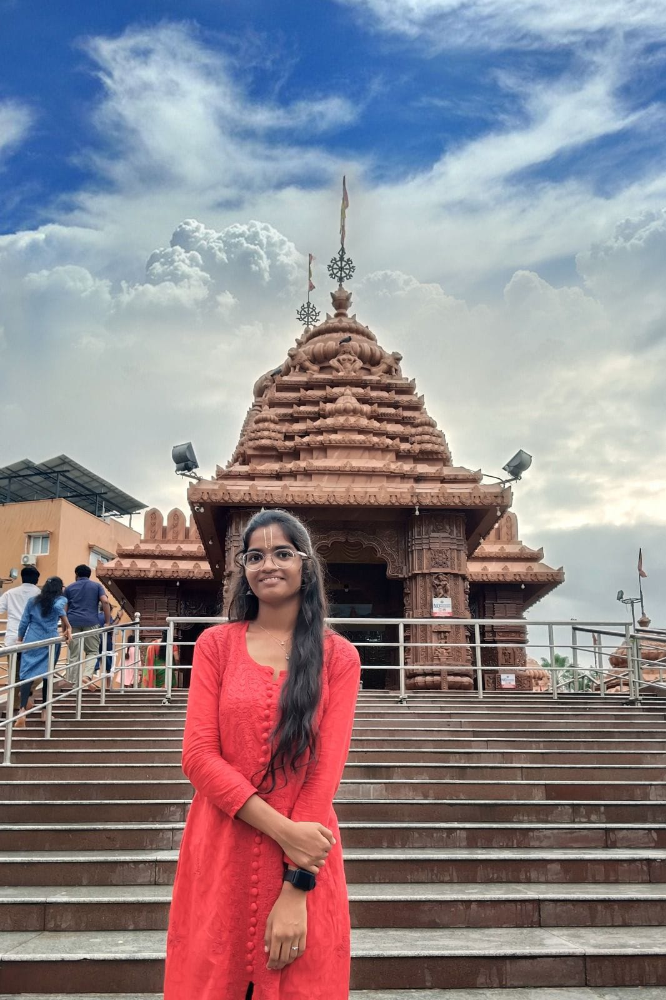

SHIRISHA BATHUKA

Summary
Seeking to blend my skills in web development with my ongoing B.Tech 3year in ECE studies,I aim to excel in contributing to meaningful projects
Education
Guru nanak Institutions Technical Campus(GNITC)
B.TECH(Electronics and Communication Engineering)|CGPA:7.0/10.0 2021-2025
Narayana Junior Collage,Hyderabad
TSBIE(Telangana State Board) Class XII,Aggregate:89 2019-2021
Bhashyam Public School,Hyderabad
BSET(Board of Secondary Education(Telangana)) Class X,CGPA:9.5 2018-2019
Work Experience
skyscanner|Front-End software Engineer intern
integrated skyscanner's design resources for cohesive user experines.
Establised efficient local development setups for HTML,CSS and javascript.
Tailored and rigorously tested application to meet project needs accurately.
Skills
programming:c,python,javascript Web:HTML,CSS
Problem Solving:Analytical thinking,Local reasoning
operating system:windows
Database Management:SQL
Teamwork:Agile,cross-functional
Achievement
secured second prize for presenting the best innovative idea titled" On-Demand Fuel Delivery",demonstrating creativity and entrepreneurial vision.
participated in the "Generation of AI" workshop gaining insights into artificial intelligence technoloies and their applications.
My Hobbies
contact Me